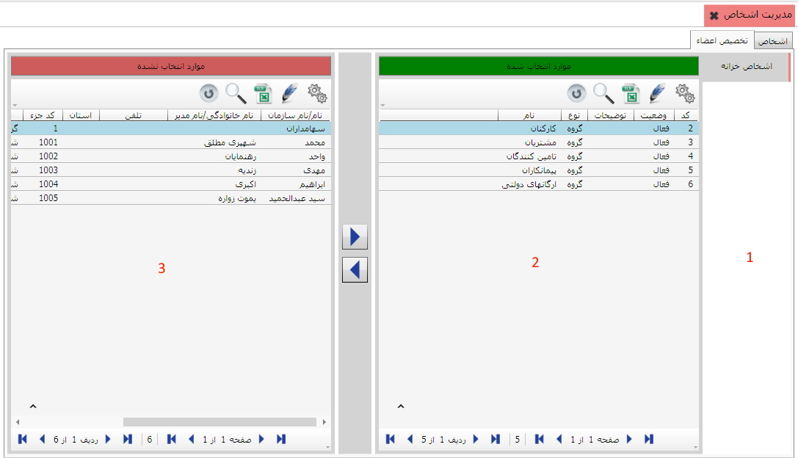

همان طور که مشاهده می کنید صفحه ی « مدیریت اشخاص» دارای دو تب « اشخاص» و « تخصیص اعضا » می باشد، در شکل زیر تب « اشخاص» انتخاب شده است.

در سمت چپ تصویر بالا چهار آیکن وجود دارد که در زیر به شرح هر یک می پردازیم :
با استفاده از این آیکن می توانید گروه و شخص جدید تعریف کنید.
با استفاده از این آیکن می توانید در صورت نیاز فایلی را ضمیمه ی اطلاعات شخص کنید.
برای حذف کردن یک شخص از این آیکن استفاده کنید.
با استفاده از این آیکن می توانید اطلاعات اشخاص را ویرایش کنید.
بعد از ایجاد گروه های اشخاص در منوی تعریف گروه های اشخاص لازم است که اعضای هر یک از این گروه ها را مشخص کنید، برای این کار روی تب « تخصیص اعضاء » کلیک کنید تا صفحه مربوط به آن باز شود.

این صفحه هم مانند سایر صفحات تخصیص که قبلا
توضیح داده شد می باشد. در قسمت 1 گروه هایی را مشاهده می کنید که در تب
«تعریف گروه های اشخاص» تعریف کردید، در قسمت 2 شخص یا گروه های اشخاص تخصیص داده شده
به گروه انتخابی و در قسمت 3 کلیه اشخاص تعریف شده در «اطلاعات پایه و مشترک»
نرم افزار قرار داده شده است.(برای تعریف اطلاعات افراد در سیستم
"اطلاعات پایه و مشترک" به راهنمای مربوطه مراجعه کنید.) با استفاده از کلید

 می توانید گروه های
اشخاص موجود در سمت چپ را به سمت راست انتقال داده و به گروه اشخاص انتخاب
شده اختصاص دهید و یا با انتقال به سمت چپ، آن ها را از تخصیص خارج کنید.
می توانید گروه های
اشخاص موجود در سمت چپ را به سمت راست انتقال داده و به گروه اشخاص انتخاب
شده اختصاص دهید و یا با انتقال به سمت چپ، آن ها را از تخصیص خارج کنید.